Note: there are two kinds of recorder:
the q1 can record 20 hours continuously, while X2 can only record 7 hours; Q1 has more functions than x2. The x2 not have time and date functions. the X2 not have time and date setting functions.
And we advise to choose the Q1 Recorder（The first Option picture), which have better functions and quality.
There is no white colors, the colours is as the picture showed.
The Ultra-thin and light mini recorder
This voice recorder is newly upgraded, subverting the traditional recording mode.
Features:
1.Metal case, mini fuselage, durable and exquisite.
2.Start recording when power on, Save recording when shut down, easy operation.
3.Voice-activated recording, Recording is automatically started when sound is detected, and recording is paused when there is no sound.
4.Supports the MP3WAV/WMA music play, interesting and practicable.
5.The name of the recording file is the recording time and supports file encryption.
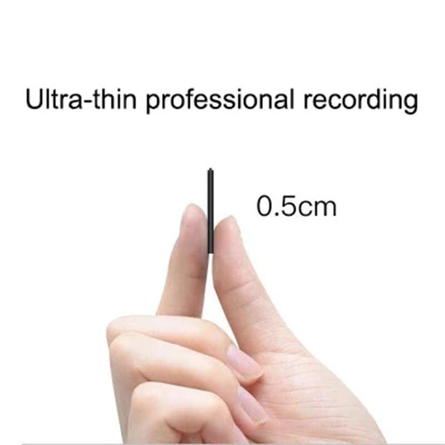
Ultra-thin, metal body, and durable dictaphone.
No indicator flashes during recording.
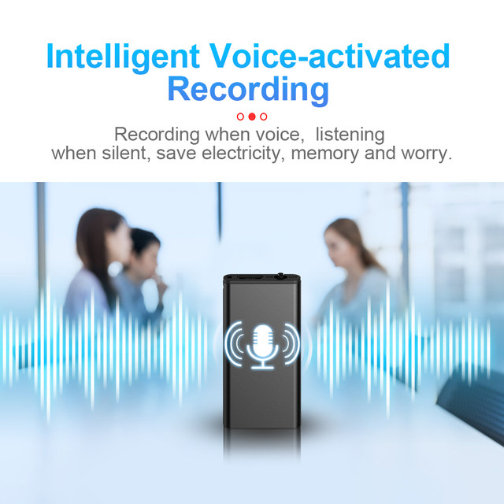
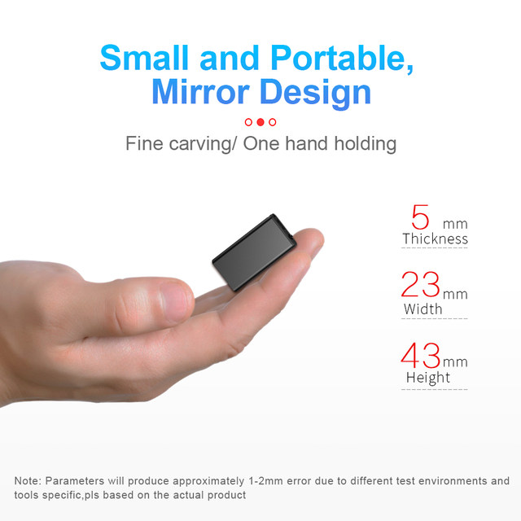
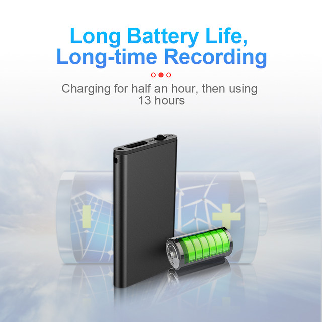
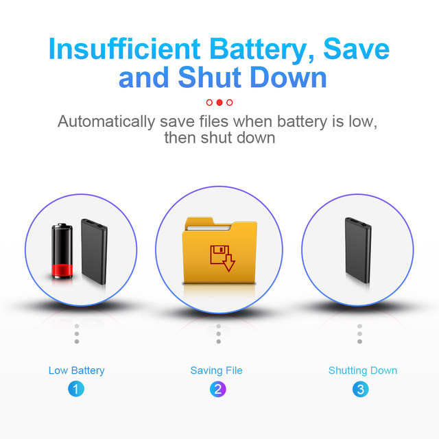
.Easy operation
Start recording when power on, Save recording when shut down，Make recording easy.
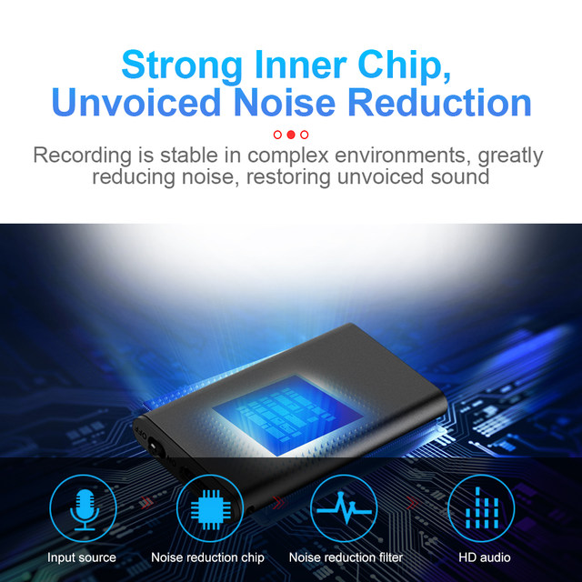
No sound, no light
When recording, the operation is simple, there is no sound reminder, and no indicator light, making the recording safer and more private
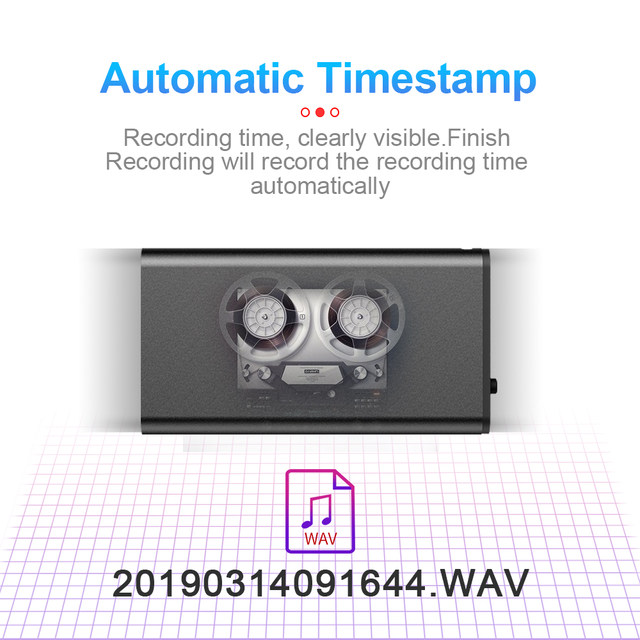
The file name is clear to sort
The recording file name is the recording time, which is convenient for searching and sorting. （Note: The lanyard is not in the standard packaging. If you need it, please follow us and become a fan of the store to get it for free or buy it separately.）
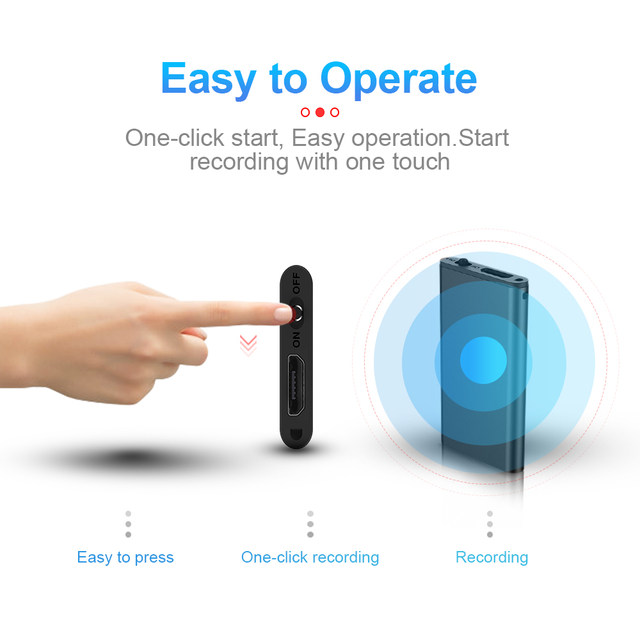
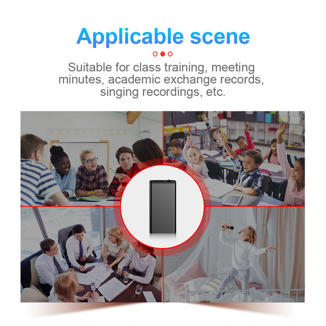
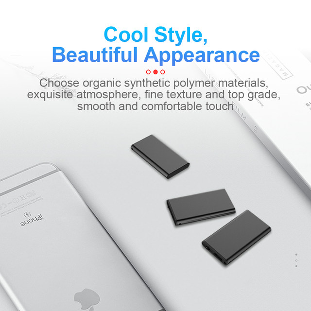
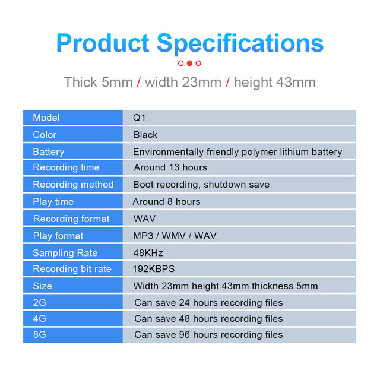
Specification:
Dimensions:43*23*5mm
Weight: about 8g
Color: Black
Memory:Built-in 8GB/16GB/32GB for option
8GB storage of recording files for 96 hours
16GB storage of recording files for 192 hours
32GB storage of recording files for 384 hours
Recording format: WAV
Bitrate:192Kbps
NSR:≥70db
Frequency:20Hz-20KHz
Microphone: large-scale high sensitivity mic
Working time: Continue Recording around 13 hours.
Music format: MP3, WAV, WMA
Recording mode:Voice-activated/ manual control
Voice-activated sensitivity: Can not adjust
Earphone:3.5mm earphone
Built-in battery:built-in lithium polymer battery
Listening to songs with headphones can last for 28 hours.
Connect: Micro USB2.0/OTG
Working Temperature:-5~45℃
Q1 Recorder Package Includes:
1 x Digital Voice Recorder MP3
1 x USB Cable
1 x Earphone
1 x User manual (Please leave your email address to us, we will send the English user manual to you, Thanks,)
Description
Specification:100% brand new with high quality
Charging Time: About 1 hours
Working Time: About 7 hours on one Charge Can store up to 96 hours of audio
Charging: Connect the USB interface to computer.Digital Voice Recorders that are compact and pocket sized, unobtrusive and simple to operate Clear Voice RecordingYou can use it as a portable audio recorder to record anything, or simply use it as a MP3 player to listen to your favorite songs.Straightforward operation – Features auto save so your recordings are saved instantly, when the earphones are plugged in, it automatically enters playback mode and you can review your file.
Operation Instruction:
MP3 Conversion: Insert the headphone into, and short-press Button (-) to convert MP3 playing mode when the indicator light turns red and flashes up slowly.
Charging Recording:When recording, insert a USB cable intoto connect the computer or the power supply, which means it is charging for recording. When charging, both the red light and the blue light flashes up and the latter staying on for a long time means charging full. The total charging time is around 1 hours.
Connecting the Computer:Inserted a USB cable into to connect the computer and find the right drive to save and open files.
Package Included:
1 x Mini Recorder
1 x Headset
1 x USB Cable
1 x User Manual
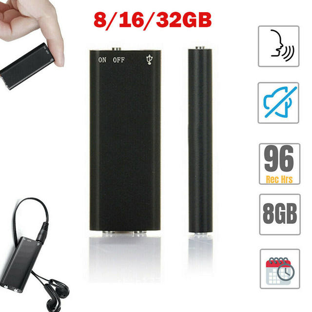
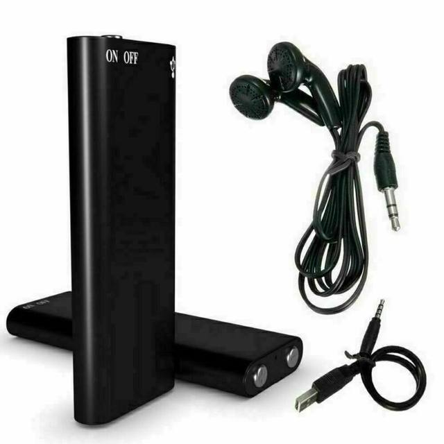
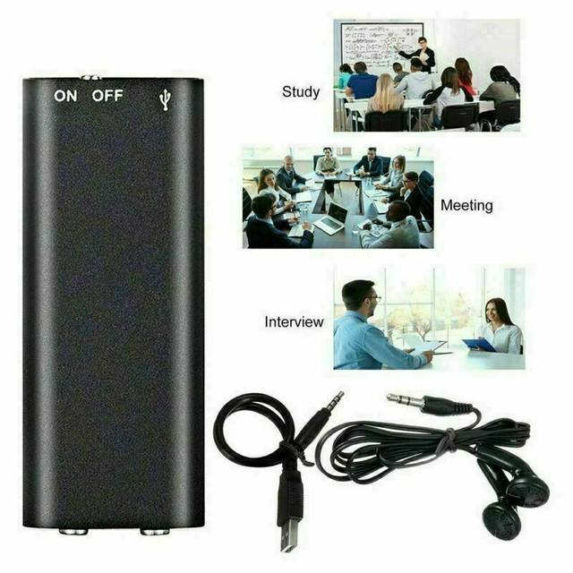
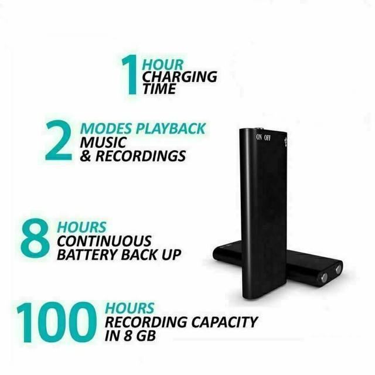
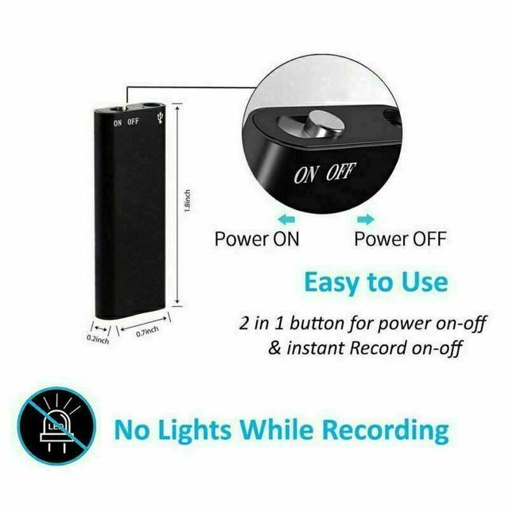
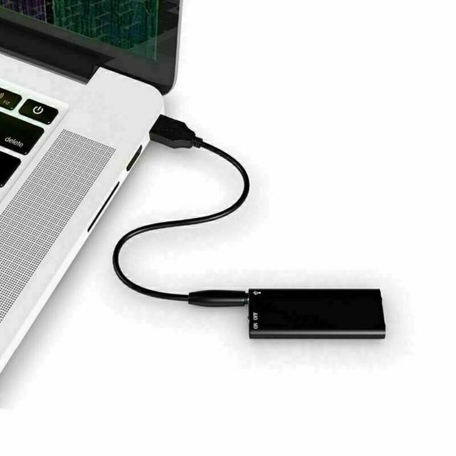
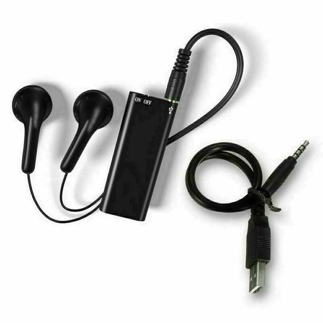
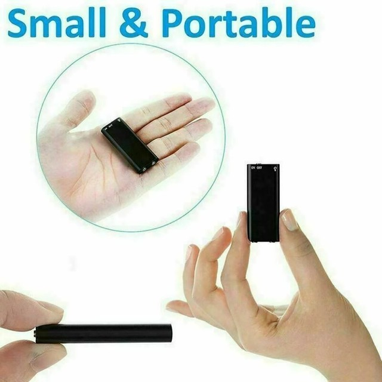